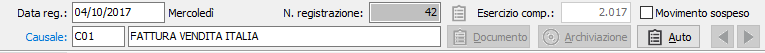
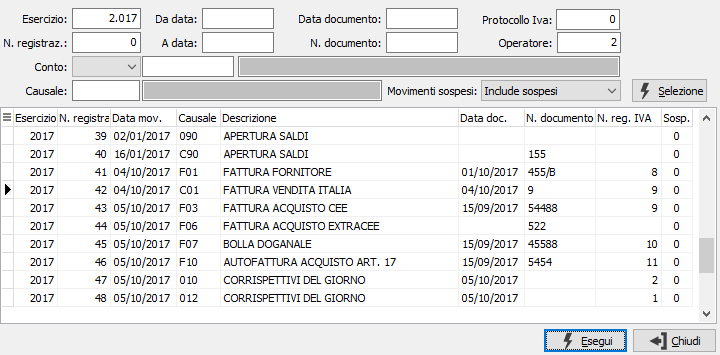

Gestione prima nota
Il programma consente l'inserimento, la variazione e la cancellazione della prima nota contabile. Accedendo al programma, si presenta la prima sezione video:

Al momento del primo accesso al programma, lo stesso si situa in modalità di Visualizzazione e presenta a video l'ultima registrazione contabile inserita.
Il cursore si posiziona sul campo data registrazione destinato a contenere la data di registrazione del movimento contabile. Viene automaticamente proposta la data di sistema.
Su questo campo l'utente deve definire il tipo di azione che intende compiere. In altre parole, deve decidere se inserire nuovi movimenti contabili, se visualizzare movimenti contabili esistenti, se modificare movimenti contabili esistenti o se cancellare movimenti contabili esistenti. L'azione da compiere può essere comandata tramite la pressione di alcuni pulsanti della tool bar o tramite l'uso dei corrispondenti tasti funzione.
Il pulsante Auto consente di copiare la struttura del movimento contabile e generare un automatismo contabile sulla causale; se il movimento riguarda un cliente o un fornitore, l'automatismo sarà assegnato al cliente o al fornitore.
Ricerca e visualizzazione di un movimento contabile
Sul campo data, in modalità di visualizzazione, per effettuare la ricerca di un movimento contabile, è possibile agire sui pulsanti frecce della tool bar. Cliccando su freccia a sinistra si potranno visualizzare sequenzialmente i movimenti precedenti, mentre cliccando su freccia a destra si potranno visualizzare i movimenti successivi.
Ovviamente il metodo illustrato è utile per la ricerca di movimenti vicini a quello presente a video, ma è improponibile in presenza di consistenti quantità di movimenti.
In questi casi, cliccando due volte sul campo data o agendo sul pulsante Zoom, è possibile determinare l'apertura della finestra video di Ricerca movimento contabile.

La finestra video di Ricerca movimento contabile presenta in primo luogo alcuni campi per inserire filtri o parametri di ricerca, allo scopo di limitare il numero di movimenti contabili da presentare a video. È possibile infatti indicare l'esercizio a cui si riferiscono i movimenti contabili da ricercare, oppure il codice (con possibilità di ricerca tramite lo zoom F9) del sottoconto da ricercare, oppure il codice (con possibilità di ricerca tramite lo zoom F9) della causale contabile da ricercare, oppure le date di inizio e fine ricerca, o più parametri fra quelli indicati. Conoscendolo, è possibile indicare il numero di movimento contabile da ricercare. Qualsiasi parametro si sia inserito, occorre attivare la selezione cliccando sul bottone Selezione. Attivata la selezione, nella griglia della sezione video inferiore vengono visualizzati tutti i movimenti contabili esistenti coerenti con i parametri di selezione inseriti. Utilizzando i tasti freccia su o freccia giù oppure trascinando con il mouse il cursore a destra della griglia, ci si posiziona sul movimento contabile da visualizzare. Cliccando quindi sul bottone Esegui, o facendo doppio clic sulla griglia in corrispondenza di una delle celle, viene visualizzato il movimento contabile desiderato.
Modifica di un movimento contabile visualizzato
Una volta individuato il movimento contabile da modificare come meglio descritto al paragrafo Ricerca e visualizzazione di un movimento contabile, quando la sezione video prima nota è completamente presente a video, è sufficiente premere il tasto funzione F3 oppure cliccare sul pulsante Modifica della tool bar. Sulla barra di stato viene visualizzato lo stato di Modifica ed è possibile agire in variazione del movimento contabile stesso.
Cancellazione di un movimento contabile visualizzato
Una volta individuato il movimento contabile da cancellare come meglio descritto al paragrafo Ricerca e visualizzazione di un movimento contabile, quando la sezione video prima nota è completamente presente a video, è sufficiente premere il tasto funzione F5 oppure cliccare sul pulsante Cancella della tool bar. Sulla barra di stato viene visualizzato lo stato di Modifica e viene visualizzato il messaggio di conferma. Confermando tramite la pressione del bottone Sì, il movimento viene cancellato a condizione che lo stesso non sia già stato stampato in via definitiva su uno dei registri obbligatori.
Inserimento di un nuovo movimento contabile
Sul campo data, è sufficiente premere il tasto funzione F4 oppure cliccare sul pulsante Nuovo della tool bar. Sulla barra di stato viene visualizzato lo stato di Inserimento, viene presentata la data di sistema ed il cursore rimane sul campo data per la conferma della stessa o per la sua eventuale modifica, in caso di necessità da parte dell'utente. Al termine di ciascuna registrazione, il cursore si riposiziona sul campo data in situazione di inserimento, predisposto per una nuova registrazione. Premendo una prima volta il tasto Esc il programma torna in stato di visualizzazione, da dove è possibile effettuare come già descritto la ricerca e l'eventuale modifica o cancellazione di una registrazione contabile esistente. Premendo ancora Esc in stato di visualizzazione, si esce dal programma di Gestione prima nota.
Inizio di un movimento contabile
A conferma della data presentata o inserita, viene visualizzato il numero di registrazione del movimento contabile relativo all'esercizio contabile cui appartiene la data di registrazione. Tale numero, come già detto, deve intendersi come numero di movimento di prima nota e non ha nulla a che fare con il numero di articolo contabile che verrà successivamente assegnato, all'atto della stampa del giornale, alla registrazione in corso. Viceversa, questo numero di movimento prima nota è significativo per eventuali variazioni o cancellazioni. Il cursore passa quindi al campo:
CAUSALE CONTABILE: inserire la causale, presente nella tabella Causali contabili, idonea per la registrazione contabile che si vuole effettuare. Per le sole registrazioni con conti di contabilità (ad esclusione quindi di registrazioni che movimentano clienti e fornitori o attivano eventuali moduli aggiuntivi) è possibile utilizzare la cosiddetta causale libera o generica, che deve comunque esistere: in questo caso, l'utente dovrà governare la registrazione descrivendo l'operazione e indicando di volta in volta i sottoconti e la sezione dei vari importi. Utilizzando invece una causale preconfigurata, il programma suggerisce conti e sezioni come previsto dalla causale stessa e propone ulteriori finestre video relative ai moduli associati. Se la causale è associata ad un automatismo contabile, verranno proposti in sequenza tutti i conti previsti dall'automatismo stesso. Sul campo sono attive le funzioni di ricerca (F9) e manutenzione (CTRL+W) sulla tabella stessa. Avendo utilizzato la causale libera o generica, a conferma è possibile descrivere il primo rigo di descrizione della registrazione; viceversa, avendo scelto una causale di sola contabilità, viene visualizzato il primo rigo di descrizione della registrazione, modificabile dall'utente se la causale lo prevede.
Dopo la conferma della causale contabile, le sezioni video si modificano in funzione della tipologia di movimento contabile previsto dalla causale inserita. L'inserimento dei dati viene normalmente effettuato nelle sezioni video di input informazioni, ed i dati inseriti sono spesso visualizzati in griglie contenute nella sezione centrale della finestra video.